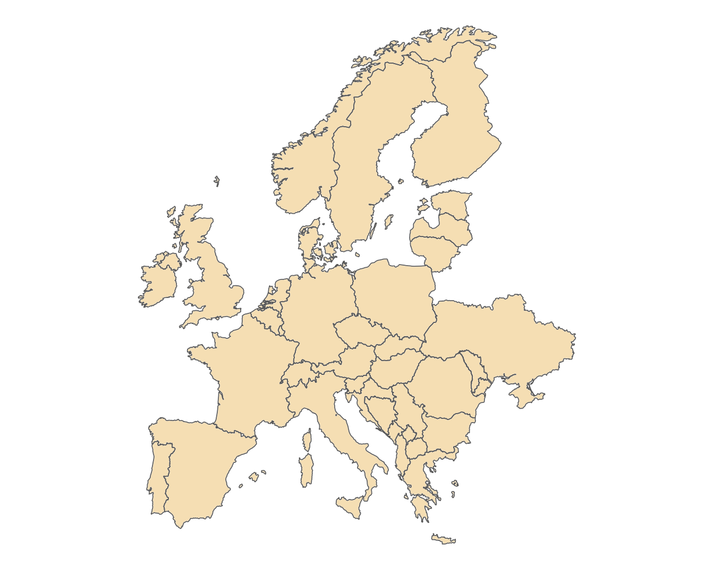
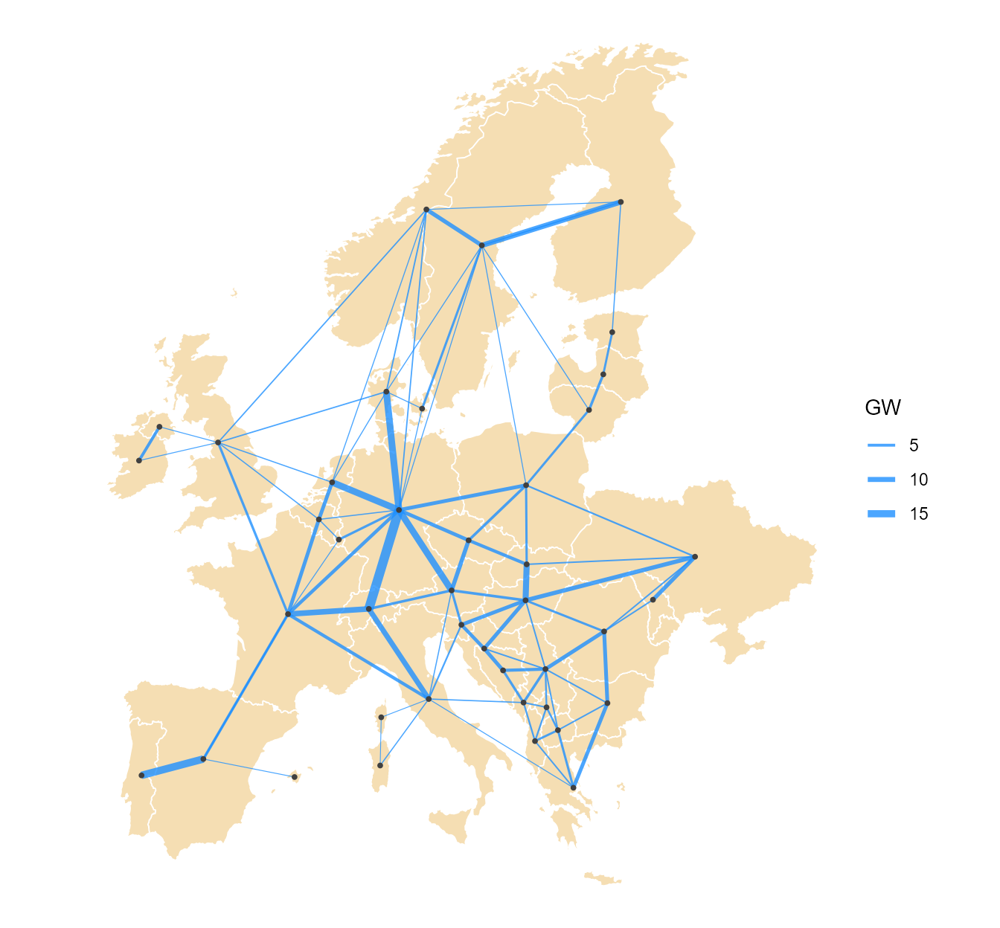
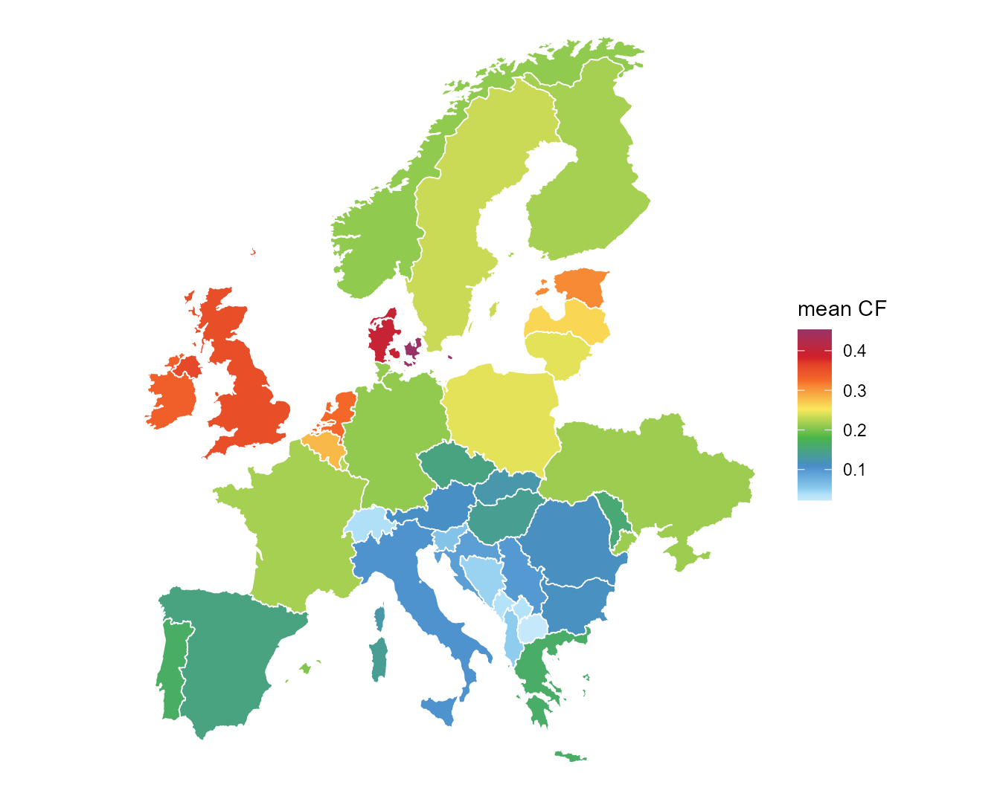
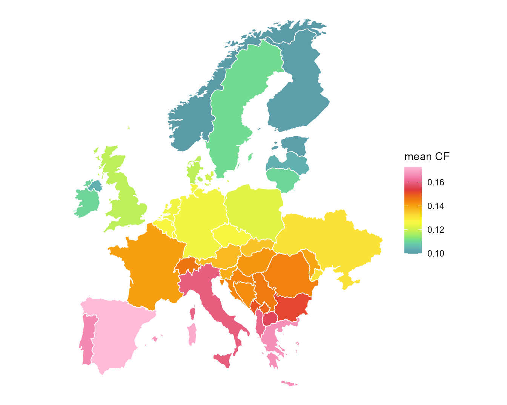
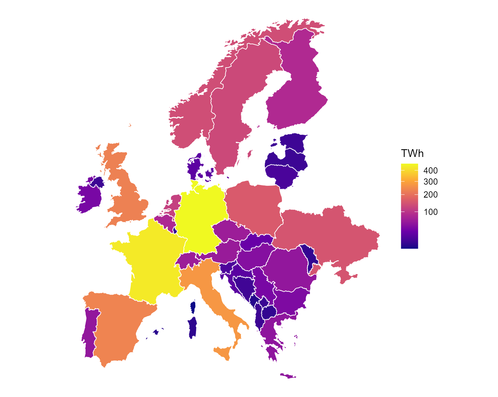

This article shows the processed data that enters the
41-node model — regions, network, weather, demand and capacities — drawn
live from the shipped pypsa_eur_41 and its geoscale.
Everything upstream (the raw sources, the NUTS datasets and their
aggregation arithmetic) lives in the data-sources article.
The regions
PyPSA-Eur clusters its substation network to 41 onshore regions —
most countries are one node; the largest split into several. The
polygons ship with the model as the bus geoframe of
pypsa_eur_41_gs:
library(ggplot2)
gs <- pypsa_eur_41_gs
geo <- geoscales::geoscale_geometry(gs, "bus")
cc <- geoscales::geoscale_geometry(gs, "country")
ggplot() +
geom_sf(data = geo, fill = "wheat", colour = "white", linewidth = 0.4) +
geom_sf(data = cc, fill = NA, colour = "grey35", linewidth = 0.3) +
theme_void() +
theme(plot.background = element_rect(fill = "white", colour = NA))
The 41 model regions (PyPSA-Eur onshore clustering). Clusters never cross country borders.
The network
Transmission enters the model as trade corridors between
region centroids — rated capacities from the summed thermal limits of
the underlying lines:
ctr <- suppressWarnings(sf::st_centroid(geo))
xy <- as.data.frame(sf::st_coordinates(ctr))
xy$bus <- geo$bus
tr <- objs[cls == "trade"]
routes <- unique(do.call(rbind, lapply(tr, function(t) {
mw <- t@capacity$stock[1]
if (is.null(mw) || is.na(mw)) mw <- t@capacity$cap.lo[1]
cbind(t@routes[1, , drop = FALSE], MW = mw)
})))
seg <- routes |>
left_join(xy, by = c(src = "bus")) |>
rename(x0 = X, y0 = Y) |>
left_join(xy, by = c(dst = "bus")) |>
rename(x1 = X, y1 = Y)
ggplot() +
geom_sf(data = geo, fill = "wheat", colour = "white", linewidth = 0.3) +
geom_segment(data = seg, aes(x0, y0, xend = x1, yend = y1,
linewidth = MW / 1e3),
colour = "dodgerblue", alpha = 0.8) +
geom_point(data = xy, aes(X, Y), size = 0.7, colour = "grey25") +
scale_linewidth(range = c(0.2, 2.2)) +
labs(linewidth = "GW") +
theme_void() +
theme(plot.background = element_rect(fill = "white", colour = NA))
The 41-node network: buses and trade corridors, line width by rated capacity.
Weather: capacity factors per region
The model’s VRE profiles are per-region hourly capacity factors (the
weather objects, 8,760 hours of 2025). Their annual means
show what each region’s blended resource offers:
ggplot(cf_map("W_ONWIND")) +
geom_sf(aes(fill = cf), colour = "white", linewidth = 0.3) +
energypal::scale_fill_energy_c("windatlas", name = "mean CF") +
theme_void() +
theme(plot.background = element_rect(fill = "white", colour = NA))
Mean onshore-wind capacity factor of the blended regional profile
(W_ONWIND), 2025.
ggplot(cf_map("W_SOLAR")) +
geom_sf(aes(fill = cf), colour = "white", linewidth = 0.3) +
energypal::scale_fill_energy_c("solaratlas", name = "mean CF") +
theme_void() +
theme(plot.background = element_rect(fill = "white", colour = NA))
Mean solar capacity factor of the blended regional profile
(W_SOLAR), 2025.
The blending is optimistic by construction — every region offers its whole eligible area at close to its best-sites capacity factor.
Demand
Measured 2025 load, distributed to regions by the GDP/population proxy:
dem <- bind_rows(lapply(objs[cls == "demand"], function(d) d@demand)) |>
summarise(TWh = sum(demand) / 1e6, .by = region)
ggplot(geo |> left_join(dem, by = c(bus = "region"))) +
geom_sf(aes(fill = TWh), colour = "white", linewidth = 0.3) +
scale_fill_viridis_c(option = "C", trans = "sqrt") +
theme_void() +
theme(plot.background = element_rect(fill = "white", colour = NA))
Annual demand per region, TWh (measured ENTSO-E 2025, distributed below country level by proxy).
sum(dem$TWh)
#> [1] 3162.754Capacities and potentials
Per carrier: the existing fleet (stock for the
non-extendable, cap.lo floors for the extendable), and the
buildable potential (cap.up):
cap <- bind_rows(lapply(objs[cls == "technology"], function(t) {
d <- t@capacity
tibble(tech = t@name,
stock_GW = sum(d$stock, na.rm = TRUE) / 1e3,
floor_GW = sum(d$cap.lo, na.rm = TRUE) / 1e3,
potential_GW = sum(d$cap.up, na.rm = TRUE) / 1e3)
}))
cap |>
filter(stock_GW + floor_GW + potential_GW > 0) |>
mutate(across(where(is.numeric), \(x) round(x, 1))) |>
arrange(desc(pmax(stock_GW, floor_GW)))
#> # A tibble: 17 × 4
#> tech stock_GW floor_GW potential_GW
#> <chr> <dbl> <dbl> <dbl>
#> 1 E_ONWIND 0 236. 9718.
#> 2 E_CCGT 0 227. 0
#> 3 E_SOLAR 0 189. 14163.
#> 4 E_NUCLEAR 140. 0 0
#> 5 E_HYDRO 109. 0 0
#> 6 E_COAL 77.4 0 0
#> 7 E_LIGNITE 61.8 0 0
#> 8 E_OFFWIND_AC 0 48.7 525.
#> 9 E_ROR 47.3 0 0
#> 10 E_BIOMASS 25.1 0 0
#> 11 E_OIL 17.1 0 0
#> 12 E_WASTE 8.1 0 0
#> 13 E_OCGT 0 6.1 0
#> 14 E_GEOTHERMAL 0.9 0 0
#> 15 E_OFFWIND_DC 0 0 290
#> 16 E_OFFWIND_FLOAT 0 0 2348
#> 17 E_SOLAR_HSAT 0 0 12302Potentials are flat area sums (eligible km² × deployment density) — the data-sources article documents how they and the profiles are made, and the known caveats.
See also
-
vignette("reneuro")— a model end to end - data-sources — the upstream sources and the NUTS datasets with their aggregation arithmetic
-
vignette("about")— how each model was built